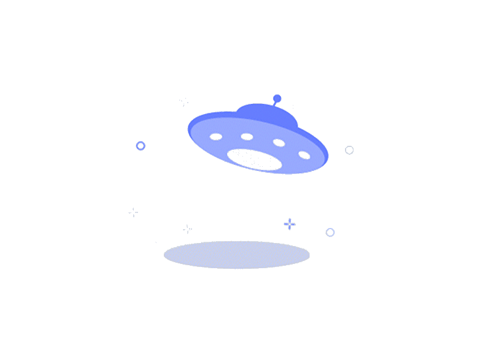

<ion-header [translucent]="true">
  <ion-toolbar>
    <ion-title>
      TODO App
    </ion-title>
  </ion-toolbar>
</ion-header>

<ion-content [fullscreen]="true">
  <ion-header collapse="condense">
    <ion-toolbar>
      <ion-title size="large">Todo App</ion-title>
    </ion-toolbar>
  </ion-header>

  <div id="container">
    <ion-grid fixed>
      <ion-row>
        <ion-col size="12" sizeMd="12" sizeLg="12">
          <div class="search-container" (click)="openSearch()">
            <ion-input readonly="" rounded aria-label="Search Task" placeholder="Search Task"
              class="custom"></ion-input>
          </div>
        </ion-col>
        <ion-col size="12">
          <div class="segment-containers">
            <ion-segment [(ngModel)]="currentTab" value="buttons" (ionChange)="segmentChanged($event)">
              <ion-segment-button value={{0}}>
                <ion-label class="">Today</ion-label>
              </ion-segment-button>
              <ion-segment-button value={{1}}>
                <ion-label>Upcomming</ion-label>
              </ion-segment-button>
              <ion-segment-button value={{2}}>
                <ion-label>Active Tasks</ion-label>
              </ion-segment-button>
            </ion-segment>
          </div>
        </ion-col>
        <ion-col size="12" sizeLg="12" size="12">
          <swiper-container appSwiper #swiper [options]="{autoplay: false}" (swiperafterinit)="swiperReady($event)"
            (swiperslidechange)="onSlideChange($event)">
            <swiper-slide>
              <div>
                <app-today-card totalTasks="{{totalTasks()}}"
                  completedTasks="{{totalCompletedTasks()}}"></app-today-card>
              </div>
              <div *ngIf="todayTask().length > 0">
                <app-task-item type="today" *ngFor="let todayTask of todayTask()" [task]=todayTask></app-task-item>
              </div>
              <div *ngIf="todayTask().length < 1" class="empty-layout-image-container">
                
              </div>
            </swiper-slide>
            <swiper-slide>
              <div *ngIf="upCommingTasks().length > 0">
                <app-task-item type="upcomming" *ngFor="let upCommingTask of upCommingTasks()" [hideStar]="true"
                  [hideMarkAsComplete]="true" [task]=upCommingTask></app-task-item>
              </div>
              <div *ngIf="upCommingTasks().length < 1" class="empty-layout-image-container">
                
              </div>
            </swiper-slide>
            <swiper-slide>
              <div *ngIf="activeTasks().length > 0">
                <app-task-item type="active_tasks" *ngFor="let upCommingTask of activeTasks()" [hideStar]="true"
                  [hideMarkAsComplete]="true" [task]=upCommingTask></app-task-item>
              </div>
              <div *ngIf="activeTasks().length < 1" class="empty-layout-image-container">
                
              </div>
            </swiper-slide>
          </swiper-container>
        </ion-col>
      </ion-row>
    </ion-grid>
    <!-- <strong>Ready to create an app?</strong>
    <p>Start with Ionic <a target="_blank" rel="noopener noreferrer" href="https://ionicframework.com/docs/components">UI Components</a></p> -->
  </div>
</ion-content>
<ion-footer>
  <ion-button fill="solid" class="w-100 m-0" (click)="openAddTaskModal()">
    <ion-icon src="../../assets/icon/add-sharp.svg"></ion-icon> Add
  </ion-button>
</ion-footer>